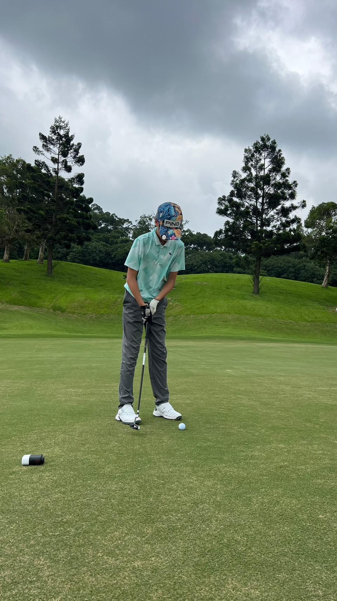
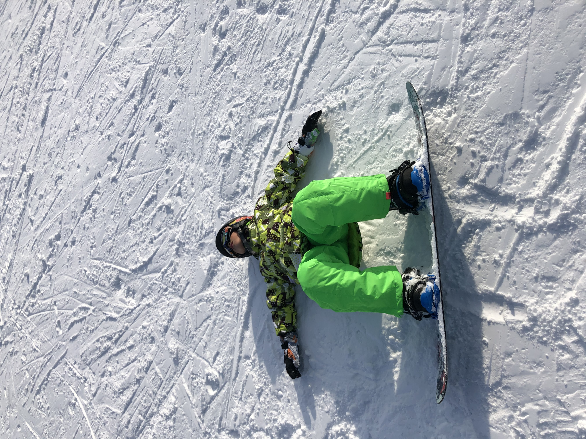
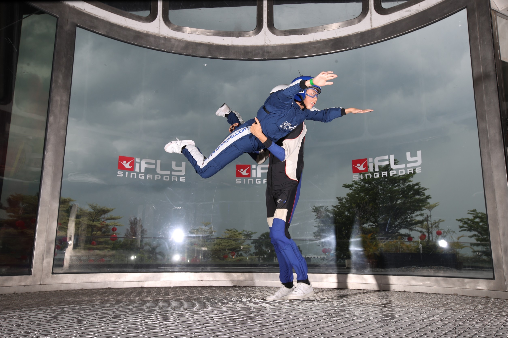
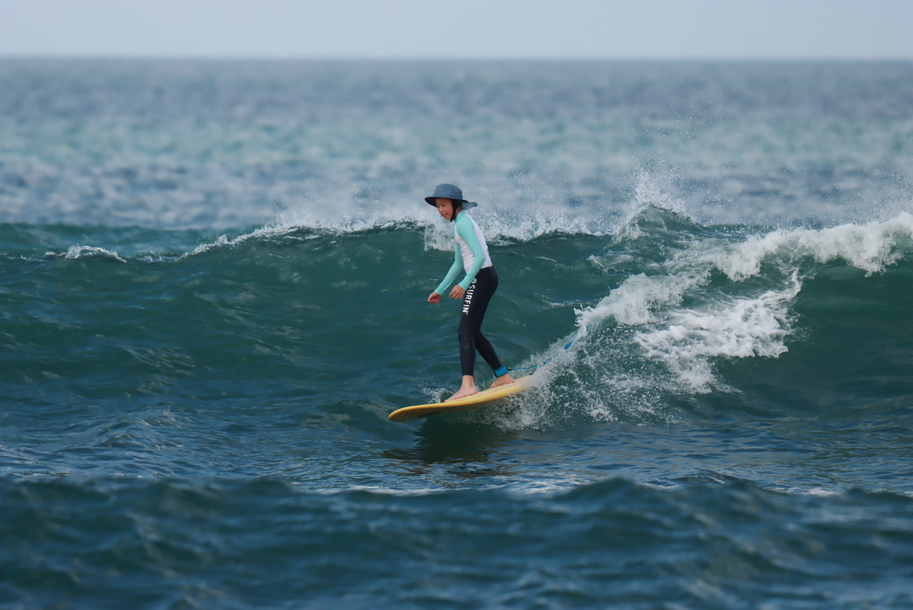

The first version of me is at school, locking in at school work and taking courses. I try to finish every work on time and try to keep out of trouble. Before tests, I will definitely go through all of the covered lessons. When having competitions, I go all in and be as competitive as possible.
I would describe myself as steady and responsible, not too active and just trying to get things done.

The real me is an active and sporty boy who plays multiple sports and loves traveling. He likes to play golf, surf and snowboard. Trying new things and overcoming fears becomes an obsession for him, for example, overcoming my fear of heights by trying expert snowboarding slopes or trying indoor skydiving in Singapore. Currently, I’m learning tennis and in the future there will be more skills I’ll learn.
Traveling on the other hand is like a mentor to me. Every trip, I’ll learn something new and help me grow. Last year, I went to the states. As you’ll probably see in other parts of the project, I learned a lot. One being that there are always people who are better than you and so you have to keep up. But in general, the trips were fun and enjoyable. It makes me want to hold on to them longer. However, summer eventually comes to an end.


